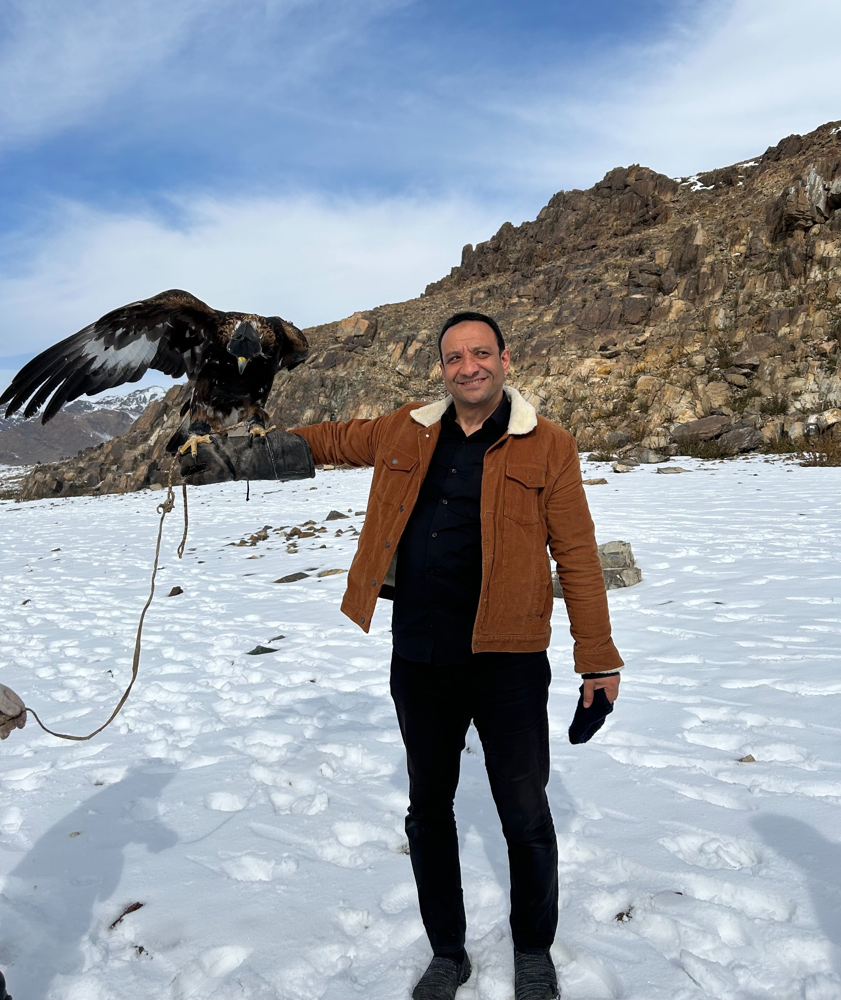

وراء هذه الروايات
لا أظن أن الكاتب يتشكل في لحظة واحدة. بل تصنعه الرحلات، والكتب، والأسئلة، والناس الذين يلتقيهم في الطريق، والحكايات التي تظل عالقة في ذاكرته حتى بعد أن يغادر المكان بسنوات.
وربما لهذا السبب، لم أصل إلى الرواية من بوابة الأدب وحدها، بل من رحلة طويلة في البحث عن الإنسان.
وُلدت في القاهرة، لكن حياتي العملية أخذتني إلى عشرات الدول، حيث عملت لأكثر من ثمانية وعشرين عامًا في مجالات الجودة والاعتماد والتنمية، وشاركت في مشروعات مع منظمات دولية، كان من بينها منظمة الأمم المتحدة للتنمية الصناعية، وقدمت محاضرات في برامج الأمم المتحدة للتنمية.
لكن أكثر ما بقي في ذاكرتي من تلك الرحلات لم يكن المؤتمرات ولا الاجتماعات، بل الناس.
في جنوب أفريقيا، لم أكن أبحث عن المعالم بقدر ما كنت أبحث عن الأماكن التي شكّلت نيلسون مانديلا، محاولًا أن أفهم كيف يستطيع إنسان واحد أن يغيّر تاريخ أمة.
وفي السنغال، وقفت في جزيرة غوريه، حيث استمعت إلى حكايات مؤلمة عن رجال ونساء اقتُلعوا من أوطانهم، ومات كثير منهم قبل أن يصلوا إلى الضفة الأخرى من المحيط. لم تكن تلك الزيارة مجرد درس في التاريخ، بل مواجهة مع جانب من التجربة الإنسانية يصعب أن يغادر الذاكرة.
وفي منغوليا، لم يكن أكثر ما أثر فيّ مهرجان النسور، بل امرأة مسنة في مدينة صغيرة أقصى غرب البلاد، أصرت مع أسرتها على استقبالي ضيفًا، وقدمت لي أفضل ما تملك، لأن ثقافة الكرم عندهم كانت أغلى من كل ما يملكون.
وفي الهند، رأيت حضارة عظيمة، لكنني رأيت أيضًا وجوهًا تحمل مشقة الحياة اليومية، فازداد اقتناعي بأن التنمية لا تُقاس بما تبنيه الدول وحدها، بل بما تمنحه للإنسان من كرامة وفرصة وأمل.
منذ طفولتي، كنت أميل إلى الحكايات أكثر من الوقائع المجردة. بدأت مع قصص كامل الكيلاني، ثم وجدت في أعمال نجيب الكيلاني ذلك المزج الذي أحببته بين التاريخ والإنسان. لم يكن التاريخ بالنسبة إليّ مادة للحفظ، بل نافذة لفهم الحاضر، واستلهام ما يساعدنا على بناء مستقبل أفضل.
ولهذا، عندما أقرأ عن حدث تاريخي، لا يشغلني ما حدث وحده، بل يشغلني الإنسان الذي عاشه. كيف فكر؟ بماذا خاف؟ وعلى أي أمل عاش؟
ربما جاء اهتمامي بالتنمية والجودة من الرغبة نفسها. كنت أؤمن دائمًا بأن قيمة أي عمل لا تُقاس بما يحققه من أرقام، بل بالأثر الذي يتركه في حياة الناس.
ولعل أكثر عبارة رافقتني في حياتي هي قول مصطفى صادق الرافعي: «إن لم تزد على الدنيا شيئًا، كنت أنت زائدًا عليها». ولم تكن بالنسبة لي حكمة جميلة، بل مبدأ حاولت أن أعيش به، في عملي، وفي كتابتي، وفي نظرتي إلى الحياة.
عندما خطرت لي فكرة كتابة أول رواية، لم يكن ذلك لأنني كنت أبحث عن قصة أرويها، بل لأنني كنت أبحث عن حياة لم أجدها كاملة بين صفحات التاريخ. كنت أقرأ عن الهجرة الأولى إلى الحبشة، فأجد الوقائع، لكنني أتساءل: كيف عاش أولئك الناس غربتهم؟ كيف كانوا يرون المستقبل؟ وكيف كانوا يتشبثون بالأمل وهم يبدؤون حياة جديدة في أرض لا يعرفونها؟
ومنذ ذلك الوقت، أدركت أن ما أبحث عنه في الرواية ليس إعادة سرد التاريخ، بل الاقتراب من الإنسان الذي عاشه.

منغوليا — رحلة بقي منها الإنسان قبل المشهد